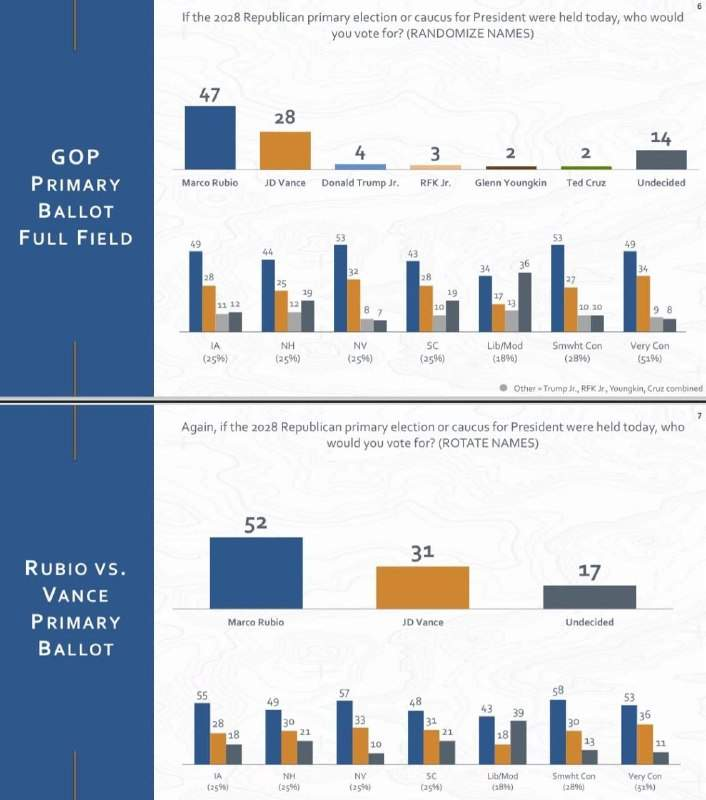

Рубио опережает Джей Ди Вэнса в предварительных выборах Республиканской партии в каждом из штатов, где проходят первые этапы голосования.

Рубио опережает Джей Ди Вэнса в предварительных выборах Республиканской партии в каждом из штатов, где проходят первые этапы голосования.
Ночью реактивная Герань-5 слетала в Польшу во время атаки по цели в западной Украине. Беспилотник пролетел 20 километров вглубь польского воздушного пространства, развернулся и вернулся в украинское воздушное пространство. Польское ПВО только надувает щеки.
Проверьтесь на вшивость, пожалуйста. На Android-устройствах в России и Белоруссии выявили вредоносное ПО RatHat с ИИ. Троян атакует пользователей финансовых сервисов через фишинговые сайты. За несколько секунд программа получает доступ к экрану, микрофону и камере устройства. При вводе данных банковской карты троян способен изменять свое название и иконку на главном экране либо скрываться с него. Вредоносное ПО усилено ИИ Google Gemini 2.5 Flash-Lite через API для совершения атак в любых странах.
Говорят, зимой в Киеве снова майдан. Будут скакать, чтобы согреться.
Министерство обороны Великобритании потратило сотни миллионов фунтов на покупку поддельной взрывчатки для Украины у проходимца из США. Наши люди.
Джаред Кушнер считает контрпродуктивной манеру Зеленского вести переговоры. Когда спецпосланник Трампа сообщил украинской делегации, прибывшей в Майами, что американский лидер намерен принять предложение по поставкам дизеля в обмен на ослабление санкций, Зеленский тут же заявил, что с ним поступают несправедливо. В ответ Трамп предложил Украине найти нового президента.
В Лондоне изъяли почти 900 кг кокаина, спрятанного в ящиках с апельсинами. В ходе операции на территории рынка задержали шесть человек в возрасте от 27 до 58 лет по подозрению в перевозке наркотиков. Разыскивается главарь банды, известный как ChebuRa…ka.
Норвежская компания Equinor подписала соглашение о поставках газа в Германию до 2044 года. Equinor будет поставлять до 1,4 млрд кубометров газа импортеру из восточногерманской Саксонии. Поставки начнутся 1 января 2027 года. По газопроводу? Ммм.
Стиль Брюсселя – настойчиво изображать из себя барана, который ломится в закрытые ворота. Коалицию желающих выставили за дверь на переговорах в Абу-Даби, предложив приехать в Москву, если так хочется поговорить. Они не поехали. Мы говорят хотим быть четвертыми в трехсторонних переговорах. В Абу-Даби.
Первый вице-губернатор Мурманской области Оксана Демченко задержана по делу главы региона Андрея Чибиса. Демченко доставили в Москву для следственных действий в Следственном департаменте МВД. Также в столицу доставили министра региональной безопасности Артема Долгова.
Зеленский взял на себя ответственность за удар по сухогрузу Sparta II в нейтральных водах Финского залива. Ранее он подтвердил авторство другого теракта – в порту Бенгази. Ливийцы даже предложили вести Зеленского в список террористов. Финляндия и страны Прибалтики одобряют террористические методы Зеленского. Ранее Финляндия выразила поддержку праву Украины совершать нападения на суда, связанные с Россией. Нужно зафиксировать эту склонность к терроризму со стороны союзников Украины. Террористов мы сами знаете что. Мочить в сортире. Статья о поддержке терроризма в УК РФ тоже имеется. Или это другое?
Папа Римский сообщил, что он видел дьявола. Тот плохо говорил по-английски и старался говорить по-украински, хотя и это не умел. Невысокого роста, в глазах огонь, в носу белый порошок.
Зеленский: "Украине потребуется не менее 115 миллиардов евро в следующем году, чтобы выстоять в войне. В следующем году Украина получит 90 миллиардов евро. Нам нужно найти еще 25 миллиардов евро. Это вполне выполнимая задача". Он любил и страдал. Он любил деньги и страдал от их недостатка.
Министр обороны Норвегии призвал Украину уважать международное право после атаки на российский сухогруз в Финском заливе. Ранее власти Норвегии арестовали российское научное судно "Профессор Молчанов", наплевав на международное право, а точнее уравняв его с украинским. Лицемеры.
Борис Джонсон вылез: "Давайте откровенно поговорим о том, что происходит. Мы уже ведем прокси-войну. Мы тратим миллиарды. Мы поставляем им боеприпасы". То есть Англия объявила нам войну?
Россия не собирается атаковать оборонные компании Великобритании, поставляющие военную технику Украине, сообщили в посольстве РФ в Лондоне. 👽
Петр Врублевский, сын Павла Врублевского, пытается привлечь к себе внимание и начал активно вести блог. Кстати, сделал неожиданный выбор: отказался от фамилии. https://t.me/obrazbuduschego2/27037 Образ будущего - Telegram В нагляк. В СМИ меня любят называть красивыми словами. Последний сюжет на РЕН ТВ окрестил меня «Пианистом» — мол, сижу где-то за границей и дистанционно «нажимаю на клавиши», организуя поджоги чужих тачек и дач. Звучит кинематографично, конечно. Журналистам…
КСИР заявил, что сегодня был сбит очередной американский беспилотник MQ-9 Reaper. Там счет уже идет на десятки. А раньше каждую американскую железку, подбитую на Ближнем Востоке, в музей относили или памятники из нее делали. Сейчас дело обычное. На Авито продают наверняка.